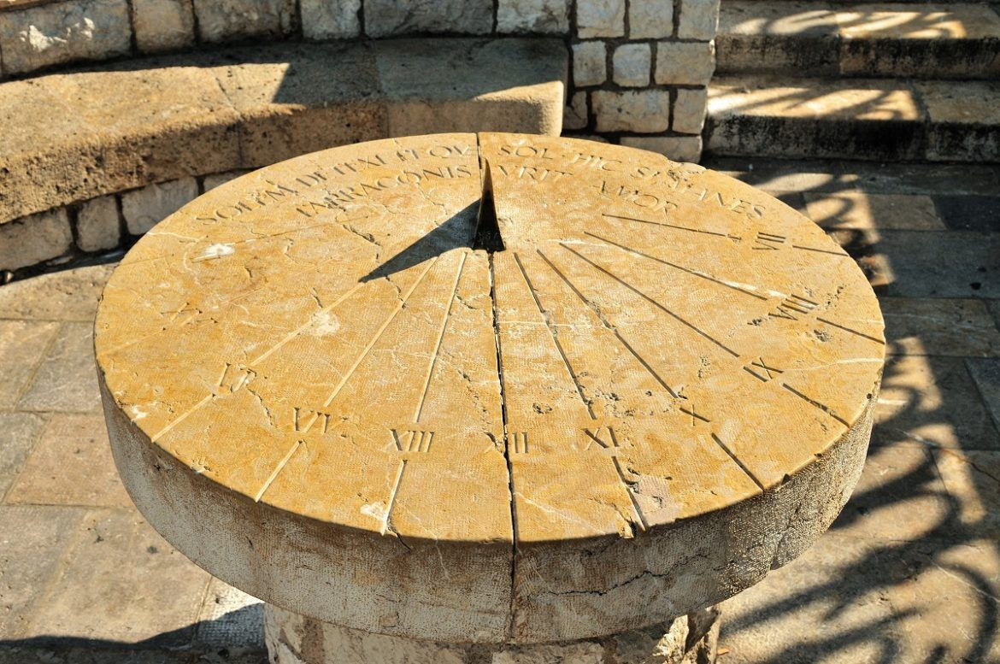

Hace 3.500 años, los egipcios dividieron el día en 24 horas e inventaron un reloj solar que media el tiempo mediante la longitud de las sombras. Con la barra orientada hacia el oeste, el sol llegaría a las doce del mediodía justo cuando no hubiera sombra en el instrumento
